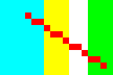
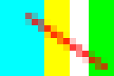
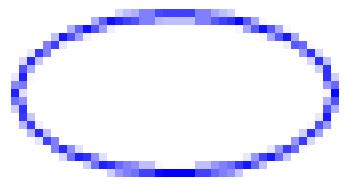
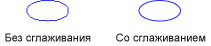

Сглаживание прямых и кривых линий
При использовании GDI+ Чтобы нарисовать линию, предоставляют начальную и конечную точку линии, но нет необходимости предоставлять данные об отдельных пикселях в строке. GDI+ работает в сочетании с программным обеспечением драйвера экрана, чтобы определить, какие точек будет включена для отображения в строке на устройстве отображения.
Присвоение псевдонима
Рассмотрите возможность непосредственно красная линия, идущий от точки (4, 2) в точку (16, 10). Предположим, система координат расположен в левом верхнем углу и означает что единицы измерения пиксель. Также предполагается, что ось x обращена вправо, а ось y точек вниз. На следующем рисунке увеличенное изображение красной линии, рисуемой на многоцветном фоне.

Красные пиксели, используемый для отображения линии, непрозрачный. В строке есть не частично прозрачных точек. Этот тип отрисовки линии делает зубчатой и строке похож на лестница. Этот метод представления линии называется Совмещение имен; лестница является псевдонимом для теоретической линии.
Сглаживание
Более сложный прием для подготовки к просмотру строки заключаются в использовании частично прозрачных точек вместе с непрозрачными. Пиксели задаются чистый красный цвет, либо смешение красного и цвет фона, зависимости от того, насколько близко эти строки. Этот тип визуализации называется сглаживания и результаты в строке, которая человеческим глазом они выглядели более smooth. Ниже показано, как несколько точек смешиваются с цветом фона для образования сглаженной линии.

Сглаживание, также называемый сглаживание, могут также применяться к кривым. На следующем рисунке увеличенное изображение сглаженного эллипса.

Ниже показан тот же эллипс в натуральную величину, без применения и один раз с помощью сглаживания.

Для рисования линий и кривых, использующих сглаживания, создайте экземпляр Graphics и присвоить его SmoothingMode свойства AntiAlias или HighQuality. Затем вызовите один из методов рисования этого же Graphics класса.
myGraphics.SmoothingMode = SmoothingMode.AntiAlias;
myGraphics.DrawLine(myPen, 0, 0, 12, 8);